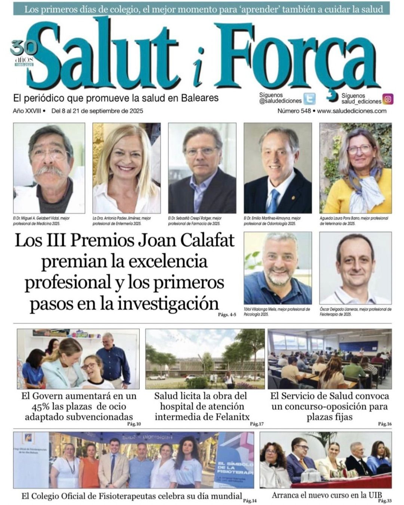
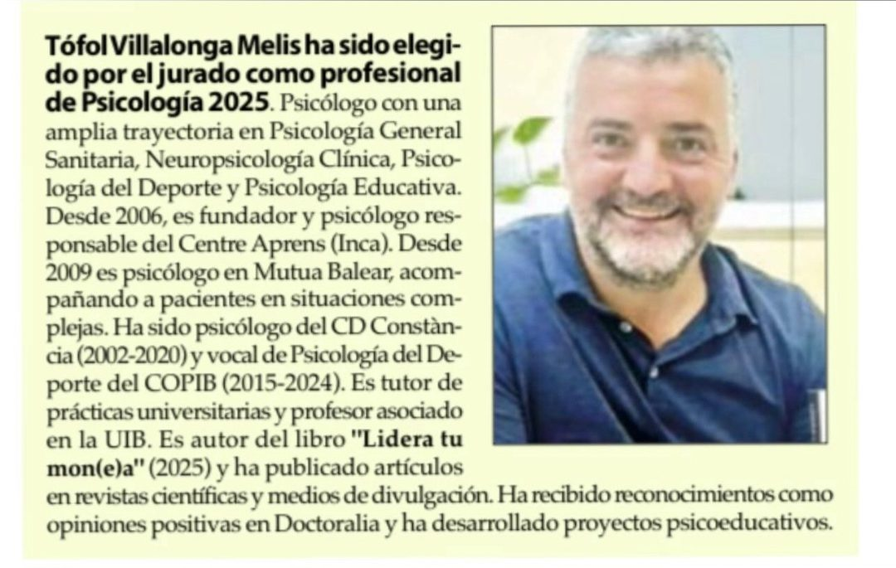

Premi Joan Calafat 2025
El jurat dels III Premis Joan Calafat m'ha triat professional de la Psicologia 2025. Ho rep com un honor i amb molt d'agraïment, que és també per a tots els pacients, famílies i companys amb qui he fet feina durant aquests anys.


Premio Joan Calafat 2025
El jurado de los III Premios Joan Calafat me ha elegido profesional de la Psicología 2025. Lo recibo como un honor y con mucho agradecimiento, que es también para todos los pacientes, familias y compañeros con los que he trabajado durante estos años.